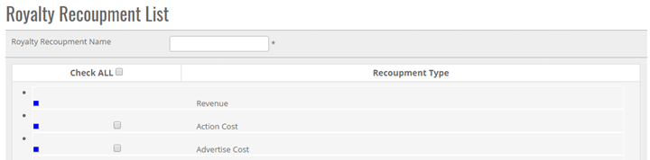


	<section>
		<article>

			<h2>Royalty Recoupment<span></span></h2>
			<div>
				<p></p>

				<p>Royalty Recoupment Comes under Master Module. It can be accessed by user who has rights for this module.</p>

				<p><b>Note: Royalty Recoupment is basically used in Cost Module.</b> </p>

				<p>Go To >> Master >> Royalty Recoupment>><b>ADD</b></p>

				<p>ADD New Royalty Recoupment in master: Click on add button at top right corner and the following page will be opened.</p>

				<div class="triangle-border top">				
					
				</div>

				<p><b>To ADD a "Royalty Recoupment" in the system, system will have following fields.</b></p>

				<p>- User can select single or Multiple Recoupment Type.</p>

				<p>- If user select check all, then all recoupment will get selected.</p>

				<p>- User can Enter Royalty Recoupment name in Text Box.</p>

				<p><b>Note:</b> - '*' represents the respective object is mandatory.</p>

				<p>Click on <b>Save</b> Button user will get alert message "Record added successfully".</p>

				<p>Click <b>Cancel</b> Button cancel the add operations and previous window will appears and data should not saved</p>


				<p><b>Modifying the Existing Royalty Recoupment</b></p>

				<p>The user who has rights to edit can edit the existing <b>"Royalty Recoupment"</b> in the system.</p>

				<p>Click <b>Edit</b>, Edit Recoupment Type Column will be shown to User as per added previously.</p>

				<p>Go To >> Master>>Royalty Recoupment>>Click Radio Button (Royalty Recoupment Name) >> <b>EDIT</b></p>

				<p>System will allow editing all the Royalty Recoupment List. </p>

				<p>Click <b>Update</b> to save the currently added operations, and Record will get Update.</p>

				<p>Click <b>Cancel</b> to cancel the add operations and previous window will appears and data should not save.</p>


				<p><b>De-Activate / activating existing Royalty Recoupment</b></p>

				<p><b>DeActive</b> - Click on Deactivate Button, once the button is clicked it will ask confirmation message "Are you sure you want to Deactivate this record" with "OK and cancel" button.</p>

				<p>If user clicks on OK Button, record will get deactivated and if clicked on Cancel, record will not get deactivated.</p>

				<p><b>Active</b> - Same way once a record is deactivated, system will show Active button. If user clicks on Active button, record will get activated.</p>


				<p><b>Search /Show All Criteria</b></p>

				<p>- User can search By Royalty Recoupment Name and then click on <b>Search</b>, it will show the result as per the search criteria. User can search name by single alphabet.</p>

				<p>- If user want to check all Royalty Recoupment Name then click on <b>Show All</b> Button. It will show the list </p>

				<p>- Click on page no, System will navigate the desired page, per page 10 records will be displayed.</p>
			</div>
		</article>
	</section>